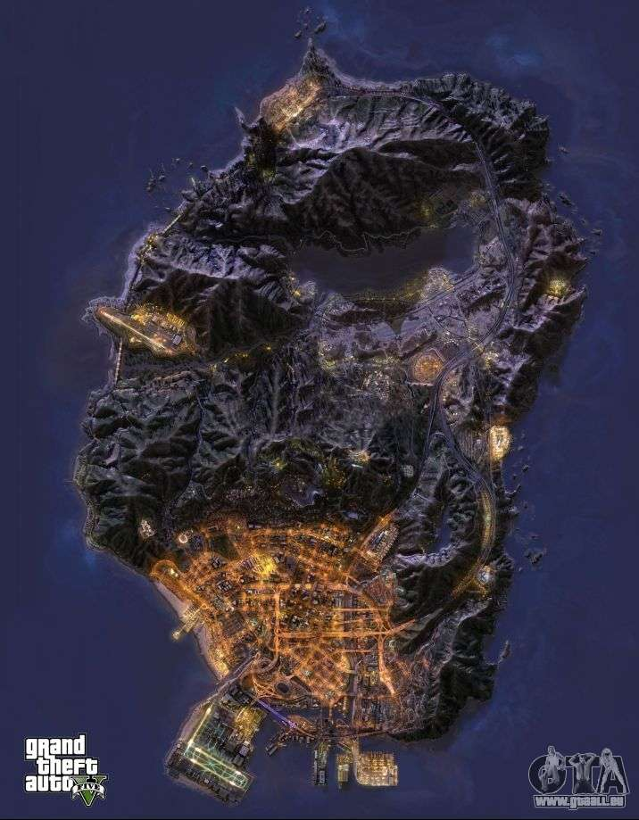

Il existe deux types de carte sur GTA 5 : la carte du mode histoire et la carte du mode en ligne où les icônes seront différent car les missions ne sont pas les mêmes mais la map en elle-même reste pareil !
